Each level of the run is a generated planet: a seed and a planet number make the map, the same on every machine. The biomes come in a set order, each built from ground the slime already feels. Below, two seeds of each, filmed in the game for two minutes with nobody playing, so you can see the ground shape the slime.
larder-world map=planet:3:42 (planet 3, seed 42). The map editor opens one too: larder-edit map=planet:3:42.Bands of barren ground between the landing and the slime. Barren ground starves it: no births, three times the upkeep. The easy first planet.
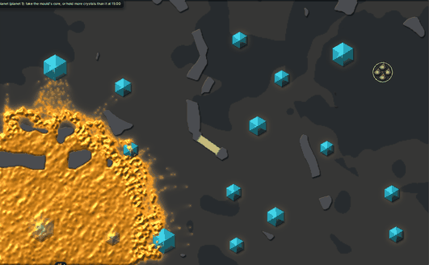
map=planet:1:1| Time | Walkers | Killed by the idle squad | Charge left |
|---|---|---|---|
| 1 s | 25.0k | 0 | 100.0% |
| 60 s | 19.2k | 33 | 99.0% |
| 120 s | 16.9k | 146 | 97.8% |
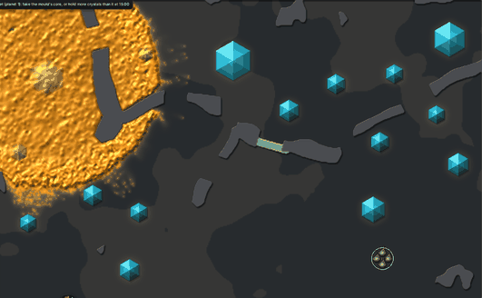
map=planet:1:2| Time | Walkers | Killed by the idle squad | Charge left |
|---|---|---|---|
| 1 s | 25.0k | 0 | 100.0% |
| 60 s | 26.6k | 20 | 99.1% |
| 120 s | 27.8k | 209 | 97.5% |
Wet pools on clay banks. Wet ground halves the slime's step. It crawls.
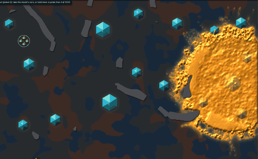
map=planet:2:1| Time | Walkers | Killed by the idle squad | Charge left |
|---|---|---|---|
| 1 s | 25.0k | 0 | 100.0% |
| 60 s | 27.4k | 0 | 98.8% |
| 120 s | 34.9k | 0 | 96.8% |
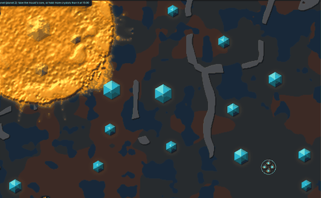
map=planet:2:2| Time | Walkers | Killed by the idle squad | Charge left |
|---|---|---|---|
| 1 s | 25.0k | 0 | 100.0% |
| 60 s | 26.6k | 0 | 98.9% |
| 120 s | 28.5k | 0 | 97.5% |
Wide rock ridges across the route, each with a narrow pass, some shut with soft rock. Chokepoints.
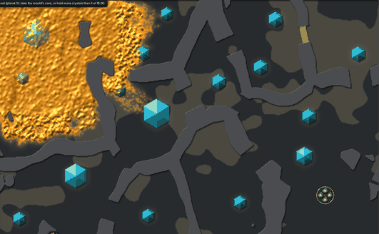
map=planet:3:1| Time | Walkers | Killed by the idle squad | Charge left |
|---|---|---|---|
| 1 s | 25.0k | 0 | 100.0% |
| 60 s | 27.8k | 49 | 98.9% |
| 120 s | 26.1k | 294 | 97.4% |
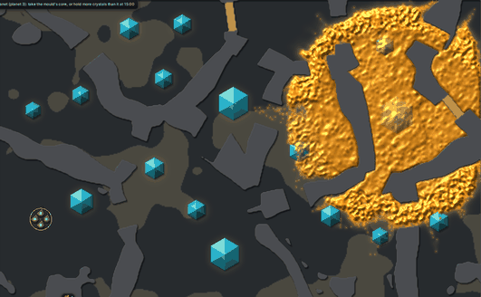
map=planet:3:2| Time | Walkers | Killed by the idle squad | Charge left |
|---|---|---|---|
| 1 s | 25.0k | 0 | 100.0% |
| 60 s | 29.8k | 1 | 98.8% |
| 120 s | 36.8k | 2 | 96.6% |
Sand everywhere, clay islands under the crystals. Sand spreads the slime (about 60% bigger). It races. The first planet with two nests.
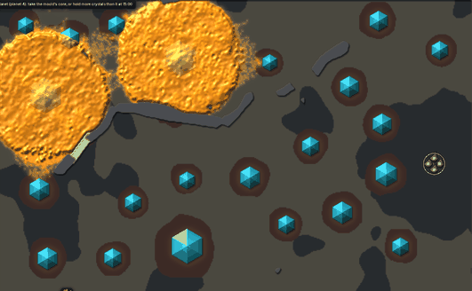
map=planet:4:1| Time | Walkers | Killed by the idle squad | Charge left |
|---|---|---|---|
| 1 s | 25.0k | 0 | 100.0% |
| 60 s | 28.3k | 68 | 98.7% |
| 120 s | 36.8k | 161 | 97.1% |
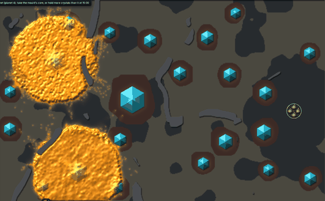
map=planet:4:2| Time | Walkers | Killed by the idle squad | Charge left |
|---|---|---|---|
| 1 s | 25.0k | 0 | 100.0% |
| 60 s | 30.7k | 23 | 98.5% |
| 120 s | 40.8k | 93 | 96.6% |
Mostly clay. Clay keeps its trail, so the slime stays where it is. It digs in.
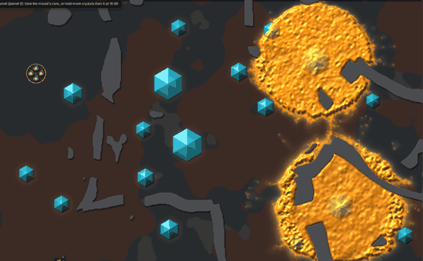
map=planet:5:1| Time | Walkers | Killed by the idle squad | Charge left |
|---|---|---|---|
| 1 s | 25.0k | 0 | 100.0% |
| 60 s | 27.5k | 0 | 99.2% |
| 120 s | 35.0k | 0 | 97.8% |
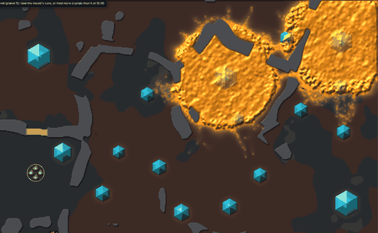
map=planet:5:2| Time | Walkers | Killed by the idle squad | Charge left |
|---|---|---|---|
| 1 s | 25.0k | 0 | 100.0% |
| 60 s | 27.8k | 0 | 98.9% |
| 120 s | 30.4k | 0 | 97.8% |
Soft-rock hedges, gates across passes and a ring round each nest with its gap toward you. Walls to chew through.
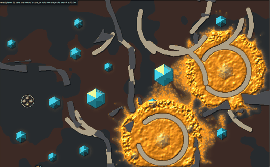
map=planet:6:1| Time | Walkers | Killed by the idle squad | Charge left |
|---|---|---|---|
| 1 s | 25.0k | 0 | 100.0% |
| 60 s | 29.2k | 5 | 98.8% |
| 120 s | 33.8k | 171 | 97.1% |
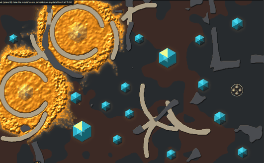
map=planet:6:2| Time | Walkers | Killed by the idle squad | Charge left |
|---|---|---|---|
| 1 s | 25.0k | 0 | 100.0% |
| 60 s | 28.2k | 0 | 98.9% |
| 120 s | 29.2k | 3 | 97.4% |
Rock pillars and mesas on sand and clay. Cover the slime grows behind, so the squad has to move.
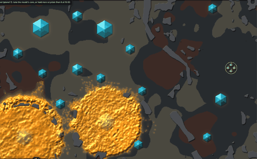
map=planet:7:1| Time | Walkers | Killed by the idle squad | Charge left |
|---|---|---|---|
| 1 s | 25.0k | 0 | 100.0% |
| 60 s | 28.6k | 0 | 98.9% |
| 120 s | 43.4k | 0 | 96.9% |
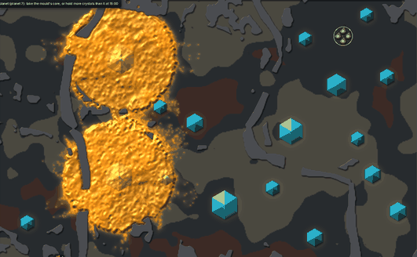
map=planet:7:2| Time | Walkers | Killed by the idle squad | Charge left |
|---|---|---|---|
| 1 s | 25.0k | 0 | 100.0% |
| 60 s | 28.6k | 10 | 98.8% |
| 120 s | 32.7k | 23 | 97.4% |
Every ground at once, three nests, rings and gates. The core world, the last of eight.
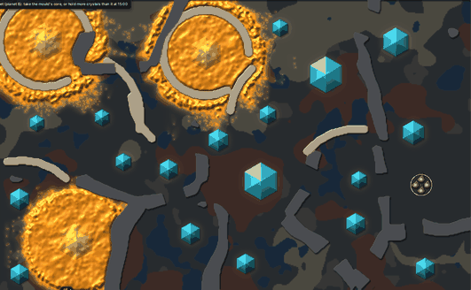
map=planet:8:1| Time | Walkers | Killed by the idle squad | Charge left |
|---|---|---|---|
| 1 s | 25.0k | 0 | 100.0% |
| 60 s | 30.2k | 0 | 98.9% |
| 120 s | 41.6k | 84 | 97.2% |
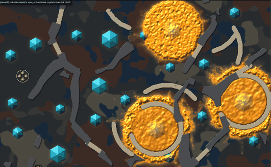
map=planet:8:2| Time | Walkers | Killed by the idle squad | Charge left |
|---|---|---|---|
| 1 s | 25.0k | 0 | 100.0% |
| 60 s | 29.8k | 0 | 98.8% |
| 120 s | 43.4k | 0 | 97.0% |
Near the landing at the game's opening zoom, a frame every quarter second: the slime's first explorers reaching the squad across each planet's ground.
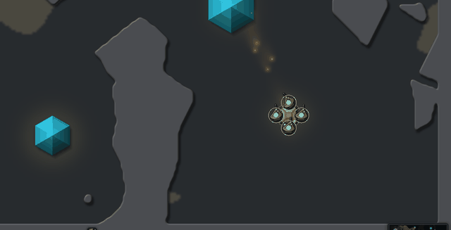
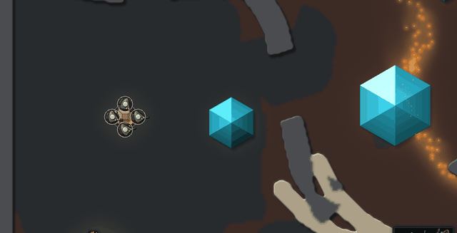
A planet that fails a check is rebuilt from the next attempt. The checks walk the map the way a squad does: every crystal and slime nest reachable from the landing, a crystal close to the landing, the far nest across the map on foot, half the crystals' charge open without breaking soft rock. Over 400 planets (seeds 1-50, planets 1-8) all passed within five attempts, 366 on the first, and a planet takes 55 ms to build, once a level. Medians, with the walking range in brackets (the map is 1,024 cells wide):
| Biome | Crystals | Rock | Sand | Clay | Barren | Wet | Walls | Walk to the nearest nest | First try passes |
|---|---|---|---|---|---|---|---|---|---|
| Barrens | 16 | 6% | 0% | 0% | 38% | 0% | 1 | 794 (643-942) | 45/50 |
| Marsh | 16 | 4% | 0% | 30% | 0% | 19% | 1 | 794 (640-956) | 50/50 |
| Canyon | 16 | 17% | 26% | 0% | 0% | 0% | 2 | 882 (661-1144) | 43/50 |
| Dunes | 22 | 3% | 49% | 30% | 0% | 0% | 0 | 578 (484-770) | 48/50 |
| Claypan | 17 | 7% | 0% | 70% | 1% | 0% | 1 | 610 (493-860) | 50/50 |
| Thicket | 17 | 5% | 0% | 46% | 0% | 0% | 80 | 587 (488-900) | 45/50 |
| Spires | 17 | 7% | 28% | 21% | 0% | 0% | 0 | 545 (485-906) | 49/50 |
| Core | 21 | 8% | 14% | 32% | 5% | 7% | 61 | 542 (478-652) | 36/50 |